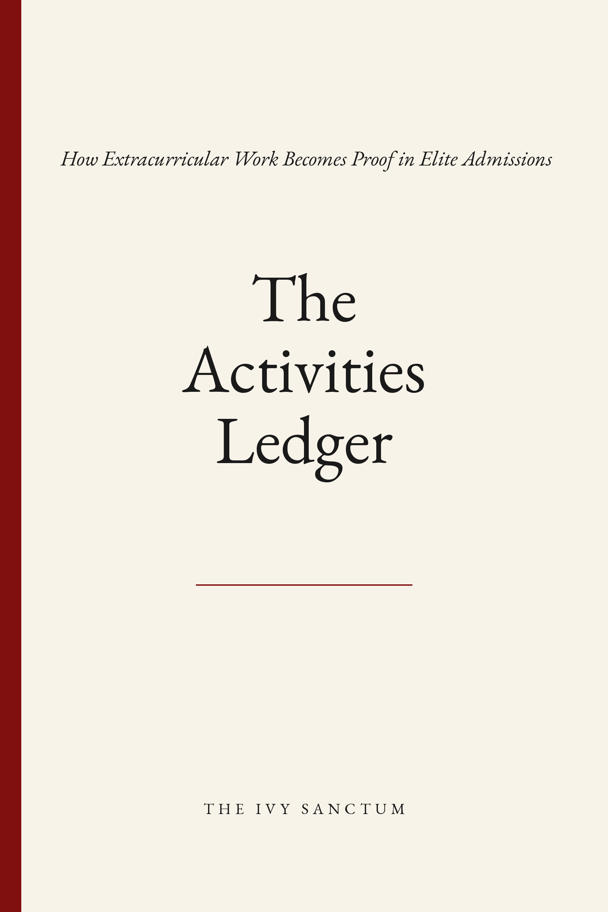

Admissions Strategy
The Ivy Sanctum
Admissions strategy for selective applications.
Reader-grade diagnostics, essay architecture, application strategy,
and working instruments developed around how selective admissions
files are actually read.
Drawing on more than 30 years of combined experience across Harvard’s
schools, including firsthand experience reading files on a Harvard
graduate admissions committee.
Office Hours
Have a question about your application?
Send one question about your file, essays, activities, recommendations, school strategy, transfer plans, or another admissions decision you’re working through.
Each question is reviewed directly. A concise response is sent by email, with clear direction for the next move when deeper analysis would add value.
Office Hours is complimentary.
The Library
Admissions instruments and private editions.
A growing collection of focused editions drawn from Ivy Sanctum’s admissions methodology, each devoted to one consequential part of the selective application.

The Office
Applied strategy for the application in front of you.
Students usually arrive with a specific pressure point: an essay in development, activities requiring stronger hierarchy, recommenders requiring direction, a school list ready for calibration, or a file ready for a clearer governing strategy.
The Office applies Ivy Sanctum’s methodology through written diagnostics, essay and supplement architecture, activity framing, recommender strategy, and full-file planning.
View Advisory →
The Approach
The application is read as one argument.
Academics establish range. Activities create evidence. Essays give
that evidence meaning. Recommendations provide witness.
School-specific writing establishes placement.
Ivy Sanctum reads these signals together and builds strategy around
the file as a whole: what carries authority, where the strongest proof
sits, how the narrative should move, and which parts of the application
should do the heaviest work.
Academics
Range, rigor, trajectory, and intellectual context.
Activities
Evidence, hierarchy, initiative, artifact, and consequence.
Essays
Meaning, structure, positioning, and reader consequence.
Recommendations
Third-party witness, proximity, credibility, and proof.
Placement
Institutional fit, school-specific logic, and contribution.
Read → Architect → Position
The Origin
Research, advisory, and a growing body of work.
The Ivy Sanctum is an independent admissions research and advisory practice. Our methodology draws on more than 30 years of combined experience across Harvard’s schools, including firsthand experience reading files on a Harvard graduate admissions committee.
We apply this work through direct advisory engagements each cycle, while developing the methodology into frameworks, instruments, and publications.
Admissions is where the work begins.
Contact
Correspondence.
For advisory inquiries, application materials, or general correspondence:
hello@theivysanctum.com